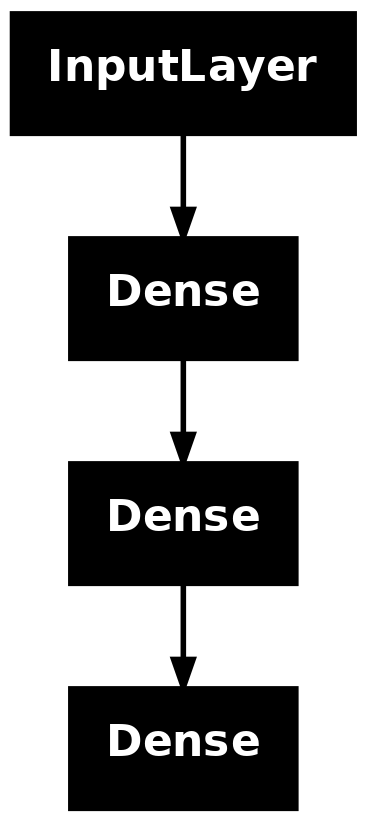
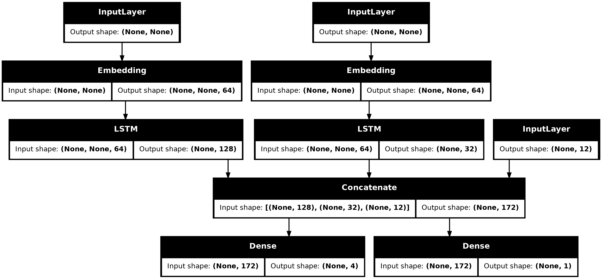
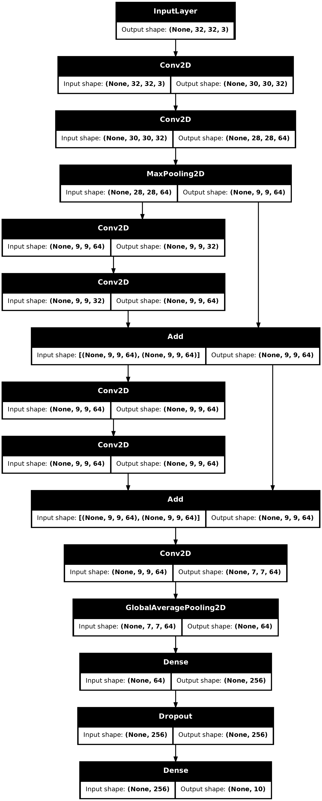

Introduction
The Keras functional API is a way to create models that are more flexible than the sequential API. The functional API can handle models with non-linear topology, shared layers, and even multiple inputs or outputs.
The main idea is that a deep learning model is usually a directed acyclic graph (DAG) of layers. So the functional API is a way to build graphs of layers.
Consider the following model:
(input: 784-dimensional vectors)
↧
[Dense (64 units, relu activation)]
↧
[Dense (64 units, relu activation)]
↧
[Dense (10 units, softmax activation)]
↧
(output: logits of a probability distribution over 10 classes)This is a basic graph with three layers. To build this model using the functional API, start by creating an input node:
inputs <- keras_input(shape = c(784))The shape of the data is set as a 784-dimensional vector. The batch size is always omitted since only the shape of each sample is specified.
If, for example, you have an image input with a shape of
(32, 32, 3), you would use:
# Just for demonstration purposes.
img_inputs <- keras_input(shape = c(32, 32, 3))The inputs that is returned contains information about
the shape and dtype of the input data that you feed to your
model. Here’s the shape:
shape(inputs)## shape(NA, 784)Here’s the dtype:
inputs$dtype## [1] "float32"You create a new node in the graph of layers by calling a layer on
this inputs object:
dense <- layer_dense(units = 64, activation="relu")
x <- dense(inputs)The “layer call” action is like drawing an arrow from “inputs” to
this layer you created. You’re “passing” the inputs to the
dense layer, and you get x as the output.
Let’s add a few more layers to the graph of layers:
outputs <- x |>
layer_dense(units = 64, activation = "relu") |>
layer_dense(units = 10)At this point, you can create a Model by specifying its
inputs and outputs in the graph of layers:
model <- keras_model(inputs = inputs, outputs = outputs, name = "mnist_model")Let’s check out what the model summary looks like:
summary(model)## Model: "mnist_model"
## ┏━━━━━━━━━━━━━━━━━━━━━━━━━━━━━━━━━┳━━━━━━━━━━━━━━━━━━━━━━━━━━━┳━━━━━━━━━━━━┓
## ┃ Layer (type) ┃ Output Shape ┃ Param # ┃
## ┡━━━━━━━━━━━━━━━━━━━━━━━━━━━━━━━━━╇━━━━━━━━━━━━━━━━━━━━━━━━━━━╇━━━━━━━━━━━━┩
## │ input_layer (InputLayer) │ (None, 784) │ 0 │
## ├─────────────────────────────────┼───────────────────────────┼────────────┤
## │ dense (Dense) │ (None, 64) │ 50,240 │
## ├─────────────────────────────────┼───────────────────────────┼────────────┤
## │ dense_2 (Dense) │ (None, 64) │ 4,160 │
## ├─────────────────────────────────┼───────────────────────────┼────────────┤
## │ dense_1 (Dense) │ (None, 10) │ 650 │
## └─────────────────────────────────┴───────────────────────────┴────────────┘
## Total params: 55,050 (215.04 KB)
## Trainable params: 55,050 (215.04 KB)
## Non-trainable params: 0 (0.00 B)You can also plot the model as a graph:
plot(model)
And, optionally, display the input and output shapes of each layer in the plotted graph:
plot(model, show_shapes = TRUE)
This figure and the code are almost identical. In the code version, the connection arrows are replaced by the call operation.
A “graph of layers” is an intuitive mental image for a deep learning model, and the functional API is a way to create models that closely mirrors this.
Training, evaluation, and inference
Training, evaluation, and inference work exactly in the same way for
models built using the functional API as for Sequential
models.
The Model class offers a built-in training loop (the
fit() method) and a built-in evaluation loop (the
evaluate() method). Note that you can easily customize these
loops to implement training routines beyond supervised learning
(e.g. GANs).
Here, load the MNIST image data, reshape it into vectors, fit the model on the data (while monitoring performance on a validation split), then evaluate the model on the test data:
c(c(x_train, y_train), c(x_test, y_test)) %<-% dataset_mnist()
x_train <- array_reshape(x_train, c(60000, 784)) / 255
x_test <- array_reshape(x_test, c(10000, 784)) / 255
model |> compile(
loss = loss_sparse_categorical_crossentropy(from_logits = TRUE),
optimizer = optimizer_rmsprop(),
metrics = "accuracy"
)
history <- model |> fit(
x_train, y_train, batch_size = 64, epochs = 2, validation_split = 0.2
)## Epoch 1/2
## 750/750 - 2s - 3ms/step - accuracy: 0.9015 - loss: 0.3513 - val_accuracy: 0.9442 - val_loss: 0.1921
## Epoch 2/2
## 750/750 - 1s - 1ms/step - accuracy: 0.9508 - loss: 0.1643 - val_accuracy: 0.9581 - val_loss: 0.1423
test_scores <- model |> evaluate(x_test, y_test, verbose=2)## 313/313 - 0s - 2ms/step - accuracy: 0.9578 - loss: 0.1338## Test loss: 0.1337984
## Test accuracy: 0.9578For further reading, see the training and evaluation guide.
Save and serialize
Saving the model and serialization work the same way for models built
using the functional API as they do for Sequential models.
The standard way to save a functional model is to call
model.save() to save the entire model as a single file. You
can later recreate the same model from this file, even if the code that
built the model is no longer available.
This saved file includes the: - model architecture - model weight
values (that were learned during training) - model training config, if
any (as passed to compile()) - optimizer and its state, if
any (to restart training where you left off)
model |> save_model("my_model.keras")
rm(model)
# Recreate the exact same model purely from the file:
model <- load_model("my_model.keras")For details, read the model serialization & saving guide.
Use the same graph of layers to define multiple models
In the functional API, models are created by specifying their inputs and outputs in a graph of layers. That means that a single graph of layers can be used to generate multiple models.
In the example below, you use the same stack of layers to instantiate
two models: an encoder model that turns image inputs into
16-dimensional vectors, and an end-to-end autoencoder model
for training.
encoder_input <- keras_input(shape = c(28, 28, 1), name="img")
encoder_output <- encoder_input |>
layer_conv_2d(16, 3, activation = "relu") |>
layer_conv_2d(32, 3, activation = "relu") |>
layer_max_pooling_2d(3) |>
layer_conv_2d(32, 3, activation = "relu") |>
layer_conv_2d(16, 3, activation = "relu") |>
layer_global_max_pooling_2d()
encoder <- keras_model(encoder_input, encoder_output, name="encoder")
summary(encoder)## Model: "encoder"
## ┏━━━━━━━━━━━━━━━━━━━━━━━━━━━━━━━━━┳━━━━━━━━━━━━━━━━━━━━━━━━━━━┳━━━━━━━━━━━━┓
## ┃ Layer (type) ┃ Output Shape ┃ Param # ┃
## ┡━━━━━━━━━━━━━━━━━━━━━━━━━━━━━━━━━╇━━━━━━━━━━━━━━━━━━━━━━━━━━━╇━━━━━━━━━━━━┩
## │ img (InputLayer) │ (None, 28, 28, 1) │ 0 │
## ├─────────────────────────────────┼───────────────────────────┼────────────┤
## │ conv2d_3 (Conv2D) │ (None, 26, 26, 16) │ 160 │
## ├─────────────────────────────────┼───────────────────────────┼────────────┤
## │ conv2d_2 (Conv2D) │ (None, 24, 24, 32) │ 4,640 │
## ├─────────────────────────────────┼───────────────────────────┼────────────┤
## │ max_pooling2d (MaxPooling2D) │ (None, 8, 8, 32) │ 0 │
## ├─────────────────────────────────┼───────────────────────────┼────────────┤
## │ conv2d_1 (Conv2D) │ (None, 6, 6, 32) │ 9,248 │
## ├─────────────────────────────────┼───────────────────────────┼────────────┤
## │ conv2d (Conv2D) │ (None, 4, 4, 16) │ 4,624 │
## ├─────────────────────────────────┼───────────────────────────┼────────────┤
## │ global_max_pooling2d │ (None, 16) │ 0 │
## │ (GlobalMaxPooling2D) │ │ │
## └─────────────────────────────────┴───────────────────────────┴────────────┘
## Total params: 18,672 (72.94 KB)
## Trainable params: 18,672 (72.94 KB)
## Non-trainable params: 0 (0.00 B)
decoder_output <- encoder_output |>
layer_reshape(c(4, 4, 1)) |>
layer_conv_2d_transpose(16, 3, activation = "relu") |>
layer_conv_2d_transpose(32, 3, activation = "relu") |>
layer_upsampling_2d(3) |>
layer_conv_2d_transpose(16, 3, activation = "relu") |>
layer_conv_2d_transpose(1, 3, activation = "relu")
autoencoder <- keras_model(encoder_input, decoder_output, name="autoencoder")
summary(autoencoder)## Model: "autoencoder"
## ┏━━━━━━━━━━━━━━━━━━━━━━━━━━━━━━━━━┳━━━━━━━━━━━━━━━━━━━━━━━━━━━┳━━━━━━━━━━━━┓
## ┃ Layer (type) ┃ Output Shape ┃ Param # ┃
## ┡━━━━━━━━━━━━━━━━━━━━━━━━━━━━━━━━━╇━━━━━━━━━━━━━━━━━━━━━━━━━━━╇━━━━━━━━━━━━┩
## │ img (InputLayer) │ (None, 28, 28, 1) │ 0 │
## ├─────────────────────────────────┼───────────────────────────┼────────────┤
## │ conv2d_3 (Conv2D) │ (None, 26, 26, 16) │ 160 │
## ├─────────────────────────────────┼───────────────────────────┼────────────┤
## │ conv2d_2 (Conv2D) │ (None, 24, 24, 32) │ 4,640 │
## ├─────────────────────────────────┼───────────────────────────┼────────────┤
## │ max_pooling2d (MaxPooling2D) │ (None, 8, 8, 32) │ 0 │
## ├─────────────────────────────────┼───────────────────────────┼────────────┤
## │ conv2d_1 (Conv2D) │ (None, 6, 6, 32) │ 9,248 │
## ├─────────────────────────────────┼───────────────────────────┼────────────┤
## │ conv2d (Conv2D) │ (None, 4, 4, 16) │ 4,624 │
## ├─────────────────────────────────┼───────────────────────────┼────────────┤
## │ global_max_pooling2d │ (None, 16) │ 0 │
## │ (GlobalMaxPooling2D) │ │ │
## ├─────────────────────────────────┼───────────────────────────┼────────────┤
## │ reshape (Reshape) │ (None, 4, 4, 1) │ 0 │
## ├─────────────────────────────────┼───────────────────────────┼────────────┤
## │ conv2d_transpose_3 │ (None, 6, 6, 16) │ 160 │
## │ (Conv2DTranspose) │ │ │
## ├─────────────────────────────────┼───────────────────────────┼────────────┤
## │ conv2d_transpose_2 │ (None, 8, 8, 32) │ 4,640 │
## │ (Conv2DTranspose) │ │ │
## ├─────────────────────────────────┼───────────────────────────┼────────────┤
## │ up_sampling2d (UpSampling2D) │ (None, 24, 24, 32) │ 0 │
## ├─────────────────────────────────┼───────────────────────────┼────────────┤
## │ conv2d_transpose_1 │ (None, 26, 26, 16) │ 4,624 │
## │ (Conv2DTranspose) │ │ │
## ├─────────────────────────────────┼───────────────────────────┼────────────┤
## │ conv2d_transpose │ (None, 28, 28, 1) │ 145 │
## │ (Conv2DTranspose) │ │ │
## └─────────────────────────────────┴───────────────────────────┴────────────┘
## Total params: 28,241 (110.32 KB)
## Trainable params: 28,241 (110.32 KB)
## Non-trainable params: 0 (0.00 B)Here, the decoding architecture is strictly symmetrical to the
encoding architecture, so the output shape is the same as the input
shape (28, 28, 1).
The reverse of a conv_2d layer is a
conv_2d_transpose layer, and the reverse of a
max_pooling_2d layer is an upsampling_2d
layer.
All models are callable, just like layers
You can treat any model as if it were a layer by invoking it on an
Input or on the output of another layer. By calling a model
you aren’t just reusing the architecture of the model, you’re also
reusing its weights.
To see this in action, here’s a different take on the autoencoder example that creates an encoder model, a decoder model, and chains them in two calls to obtain the autoencoder model:
encoder_input <- keras_input(shape = c(28, 28, 1), name="img")
encoder_output <- encoder_input |>
layer_conv_2d(16, 3, activation = "relu") |>
layer_conv_2d(32, 3, activation = "relu") |>
layer_max_pooling_2d(3) |>
layer_conv_2d(32, 3, activation = "relu") |>
layer_conv_2d(16, 3, activation = "relu") |>
layer_global_max_pooling_2d()
encoder <- keras_model(encoder_input, encoder_output, name="encoder")
summary(encoder)## Model: "encoder"
## ┏━━━━━━━━━━━━━━━━━━━━━━━━━━━━━━━━━┳━━━━━━━━━━━━━━━━━━━━━━━━━━━┳━━━━━━━━━━━━┓
## ┃ Layer (type) ┃ Output Shape ┃ Param # ┃
## ┡━━━━━━━━━━━━━━━━━━━━━━━━━━━━━━━━━╇━━━━━━━━━━━━━━━━━━━━━━━━━━━╇━━━━━━━━━━━━┩
## │ img (InputLayer) │ (None, 28, 28, 1) │ 0 │
## ├─────────────────────────────────┼───────────────────────────┼────────────┤
## │ conv2d_7 (Conv2D) │ (None, 26, 26, 16) │ 160 │
## ├─────────────────────────────────┼───────────────────────────┼────────────┤
## │ conv2d_6 (Conv2D) │ (None, 24, 24, 32) │ 4,640 │
## ├─────────────────────────────────┼───────────────────────────┼────────────┤
## │ max_pooling2d_1 (MaxPooling2D) │ (None, 8, 8, 32) │ 0 │
## ├─────────────────────────────────┼───────────────────────────┼────────────┤
## │ conv2d_5 (Conv2D) │ (None, 6, 6, 32) │ 9,248 │
## ├─────────────────────────────────┼───────────────────────────┼────────────┤
## │ conv2d_4 (Conv2D) │ (None, 4, 4, 16) │ 4,624 │
## ├─────────────────────────────────┼───────────────────────────┼────────────┤
## │ global_max_pooling2d_1 │ (None, 16) │ 0 │
## │ (GlobalMaxPooling2D) │ │ │
## └─────────────────────────────────┴───────────────────────────┴────────────┘
## Total params: 18,672 (72.94 KB)
## Trainable params: 18,672 (72.94 KB)
## Non-trainable params: 0 (0.00 B)
decoder_input <- keras_input(shape = c(16), name = "encoded_img")
decoder_output <- decoder_input |>
layer_reshape(c(4, 4, 1)) |>
layer_conv_2d_transpose(16, 3, activation = "relu") |>
layer_conv_2d_transpose(32, 3, activation = "relu") |>
layer_upsampling_2d(3) |>
layer_conv_2d_transpose(16, 3, activation = "relu") |>
layer_conv_2d_transpose(1, 3, activation = "relu")
decoder <- keras_model(decoder_input, decoder_output, name = "decoder")
summary(decoder)## Model: "decoder"
## ┏━━━━━━━━━━━━━━━━━━━━━━━━━━━━━━━━━┳━━━━━━━━━━━━━━━━━━━━━━━━━━━┳━━━━━━━━━━━━┓
## ┃ Layer (type) ┃ Output Shape ┃ Param # ┃
## ┡━━━━━━━━━━━━━━━━━━━━━━━━━━━━━━━━━╇━━━━━━━━━━━━━━━━━━━━━━━━━━━╇━━━━━━━━━━━━┩
## │ encoded_img (InputLayer) │ (None, 16) │ 0 │
## ├─────────────────────────────────┼───────────────────────────┼────────────┤
## │ reshape_1 (Reshape) │ (None, 4, 4, 1) │ 0 │
## ├─────────────────────────────────┼───────────────────────────┼────────────┤
## │ conv2d_transpose_7 │ (None, 6, 6, 16) │ 160 │
## │ (Conv2DTranspose) │ │ │
## ├─────────────────────────────────┼───────────────────────────┼────────────┤
## │ conv2d_transpose_6 │ (None, 8, 8, 32) │ 4,640 │
## │ (Conv2DTranspose) │ │ │
## ├─────────────────────────────────┼───────────────────────────┼────────────┤
## │ up_sampling2d_1 (UpSampling2D) │ (None, 24, 24, 32) │ 0 │
## ├─────────────────────────────────┼───────────────────────────┼────────────┤
## │ conv2d_transpose_5 │ (None, 26, 26, 16) │ 4,624 │
## │ (Conv2DTranspose) │ │ │
## ├─────────────────────────────────┼───────────────────────────┼────────────┤
## │ conv2d_transpose_4 │ (None, 28, 28, 1) │ 145 │
## │ (Conv2DTranspose) │ │ │
## └─────────────────────────────────┴───────────────────────────┴────────────┘
## Total params: 9,569 (37.38 KB)
## Trainable params: 9,569 (37.38 KB)
## Non-trainable params: 0 (0.00 B)
autoencoder_input <- keras_input(shape = c(28, 28, 1), name = "img")
encoded_img <- encoder(autoencoder_input)
decoded_img <- decoder(encoded_img)
autoencoder <- keras_model(autoencoder_input, decoded_img,
name = "autoencoder")
summary(autoencoder)## Model: "autoencoder"
## ┏━━━━━━━━━━━━━━━━━━━━━━━━━━━━━━━━━┳━━━━━━━━━━━━━━━━━━━━━━━━━━━┳━━━━━━━━━━━━┓
## ┃ Layer (type) ┃ Output Shape ┃ Param # ┃
## ┡━━━━━━━━━━━━━━━━━━━━━━━━━━━━━━━━━╇━━━━━━━━━━━━━━━━━━━━━━━━━━━╇━━━━━━━━━━━━┩
## │ img (InputLayer) │ (None, 28, 28, 1) │ 0 │
## ├─────────────────────────────────┼───────────────────────────┼────────────┤
## │ encoder (Functional) │ (None, 16) │ 18,672 │
## ├─────────────────────────────────┼───────────────────────────┼────────────┤
## │ decoder (Functional) │ (None, 28, 28, 1) │ 9,569 │
## └─────────────────────────────────┴───────────────────────────┴────────────┘
## Total params: 28,241 (110.32 KB)
## Trainable params: 28,241 (110.32 KB)
## Non-trainable params: 0 (0.00 B)As you can see, the model can be nested: a model can contain sub-models (since a model is just like a layer). A common use case for model nesting is ensembling. For example, here’s how to ensemble a set of models into a single model that averages their predictions:
get_model <- function() {
inputs <- keras_input(shape = 128)
outputs <- inputs |> layer_dense(1)
keras_model(inputs, outputs)
}
model1 <- get_model()
model2 <- get_model()
model3 <- get_model()
inputs <- keras_input(shape = 128)
y1 <- model1(inputs)
y2 <- model2(inputs)
y3 <- model3(inputs)
outputs <- layer_average(list(y1, y2, y3))
ensemble_model <- keras_model(inputs = inputs, outputs = outputs)Manipulate complex graph topologies
Models with multiple inputs and outputs
The functional API makes it easy to manipulate multiple inputs and
outputs. This cannot be handled with the Sequential
API.
For example, if you’re building a system for ranking customer issue tickets by priority and routing them to the correct department, then the model will have three inputs:
- the title of the ticket (text input),
- the text body of the ticket (text input), and
- any tags added by the user (categorical input)
This model will have two outputs:
- the priority score between 0 and 1 (scalar sigmoid output), and
- the department that should handle the ticket (softmax output over the set of departments).
You can build this model in a few lines with the functional API:
num_tags <- 12 # Number of unique issue tags
num_words <-
10000 # Size of vocabulary obtained when preprocessing text data
num_departments <- 4 # Number of departments for predictions
title_input <- # Variable-length sequence of ints
keras_input(shape(NA), name = "title")
body_input <- # Variable-length sequence of ints
keras_input(shape(NA), name = "body")
tags_input <- # Binary vectors of size `num_tags`
keras_input(shape = num_tags, name = "tags")
# Embed each word in the title into a 64-dimensional vector
title_features <- layer_embedding(title_input, num_words, 64)
# Embed each word in the text into a 64-dimensional vector
body_features <- layer_embedding(body_input, num_words, 64)
# Reduce sequence of embedded words in the title
# into a single 128-dimensional vector
title_features <- layer_lstm(title_features, 128)
# Reduce sequence of embedded words in the body
# into a single 32-dimensional vector
body_features <- layer_lstm(body_features, 32)
# Merge all available features into a single large vector via concatenation
x <- layer_concatenate(title_features, body_features, tags_input)
# Stick a logistic regression for priority prediction on top of the features
priority_pred <- layer_dense(x, 1, name = "priority")
# Stick a department classifier on top of the features
department_pred <- layer_dense(x, num_departments, name = "department")
# Instantiate an end-to-end model predicting both priority and department
model <- keras_model(
inputs = list(title_input, body_input, tags_input),
outputs = list(priority = priority_pred, department = department_pred)
)Now plot the model:
plot(model, show_shapes = TRUE)
When compiling this model, you can assign different losses to each output. You can even assign different weights to each loss – to modulate their contribution to the total training loss.
model |> compile(
optimizer = optimizer_rmsprop(1e-3),
loss = list(
loss_binary_crossentropy(from_logits = TRUE),
loss_categorical_crossentropy(from_logits = TRUE)
),
loss_weights = c(1.0, 0.2)
)Since the output layers have different names, you could also specify the losses and loss weights with the corresponding layer names:
model |> compile(
optimizer = optimizer_rmsprop(1e-3),
loss = list(
priority = loss_binary_crossentropy(from_logits = TRUE),
department = loss_categorical_crossentropy(from_logits = TRUE)
),
loss_weights = list(priority = 1.0, department = 0.2)
)Train the model by passing lists of NumPy arrays of inputs and targets:
# Dummy input data
title_data <- random_integer(c(1280, 10), 0, num_words)
body_data <- random_integer(c(1280, 100), 0, num_words)
tags_data <- random_integer(c(1280, num_tags), 0, 2)
# Dummy target data
priority_targets <- random_normal(c(1280, 1))
dept_targets <- random_integer(c(1280, num_departments), 0, 2)
model |> fit(
list(title = title_data, body = body_data, tags = tags_data),
list(priority = priority_targets, department = dept_targets),
epochs = 2,
batch_size = 32
)## Epoch 1/2
## 40/40 - 3s - 69ms/step - loss: 0.3948
## Epoch 2/2
## 40/40 - 0s - 5ms/step - loss: 0.1971When calling fit with a Dataset object, it should yield
either a list of lists like
list(list(title_data, body_data, tags_data), list(priority_targets, dept_targets))
or a list of named lists like
list(list(title = title_data, body = body_data, tags = tags_data), list(priority = priority_targets, department = dept_targets)).
For more detailed explanation, refer to the training and evaluation guide.
A toy ResNet model
In addition to models with multiple inputs and outputs, the
functional API makes it easy to manipulate non-linear connectivity
topologies – these are models with layers that are not connected
sequentially, which the Sequential API cannot handle.
A common use case for this is residual connections. Let’s build a toy ResNet model for CIFAR10 to demonstrate this:
inputs <- keras_input(shape = c(32, 32, 3), name = "img")
block_1_output <- inputs |>
layer_conv_2d(32, kernel_size = 3, activation = "relu") |>
layer_conv_2d(64, kernel_size = 3, activation = "relu") |>
layer_max_pooling_2d(pool_size = 3)
block_2_output <- block_1_output |>
layer_conv_2d(32, kernel_size = 3, activation = "relu", padding = "same") |>
layer_conv_2d(64, kernel_size = 3, activation = "relu", padding = "same") |>
layer_add(block_1_output)
block_3_output <- block_2_output |>
layer_conv_2d(64, kernel_size = 3, activation = "relu", padding = "same") |>
layer_conv_2d(64, kernel_size = 3, activation = "relu", padding = "same") |>
layer_add(block_2_output)
outputs <- block_3_output |>
layer_conv_2d(64, 3, activation = "relu") |>
layer_global_average_pooling_2d() |>
layer_dense(256, activation = "relu") |>
layer_dropout(0.5) |>
layer_dense(10)
model <- keras_model(inputs, outputs, name = "toy_resnet")
summary(model)## Model: "toy_resnet"
## ┏━━━━━━━━━━━━━━━━━━━━━┳━━━━━━━━━━━━━━━━━━━┳━━━━━━━━━┳━━━━━━━━━━━━━━━━━━━━━━┓
## ┃ Layer (type) ┃ Output Shape ┃ Param # ┃ Connected to ┃
## ┡━━━━━━━━━━━━━━━━━━━━━╇━━━━━━━━━━━━━━━━━━━╇━━━━━━━━━╇━━━━━━━━━━━━━━━━━━━━━━┩
## │ img (InputLayer) │ (None, 32, 32, 3) │ 0 │ - │
## ├─────────────────────┼───────────────────┼─────────┼──────────────────────┤
## │ conv2d_9 (Conv2D) │ (None, 30, 30, │ 896 │ img[0][0] │
## │ │ 32) │ │ │
## ├─────────────────────┼───────────────────┼─────────┼──────────────────────┤
## │ conv2d_8 (Conv2D) │ (None, 28, 28, │ 18,496 │ conv2d_9[0][0] │
## │ │ 64) │ │ │
## ├─────────────────────┼───────────────────┼─────────┼──────────────────────┤
## │ max_pooling2d_2 │ (None, 9, 9, 64) │ 0 │ conv2d_8[0][0] │
## │ (MaxPooling2D) │ │ │ │
## ├─────────────────────┼───────────────────┼─────────┼──────────────────────┤
## │ conv2d_11 (Conv2D) │ (None, 9, 9, 32) │ 18,464 │ max_pooling2d_2[0][… │
## ├─────────────────────┼───────────────────┼─────────┼──────────────────────┤
## │ conv2d_10 (Conv2D) │ (None, 9, 9, 64) │ 18,496 │ conv2d_11[0][0] │
## ├─────────────────────┼───────────────────┼─────────┼──────────────────────┤
## │ add (Add) │ (None, 9, 9, 64) │ 0 │ conv2d_10[0][0], │
## │ │ │ │ max_pooling2d_2[0][… │
## ├─────────────────────┼───────────────────┼─────────┼──────────────────────┤
## │ conv2d_13 (Conv2D) │ (None, 9, 9, 64) │ 36,928 │ add[0][0] │
## ├─────────────────────┼───────────────────┼─────────┼──────────────────────┤
## │ conv2d_12 (Conv2D) │ (None, 9, 9, 64) │ 36,928 │ conv2d_13[0][0] │
## ├─────────────────────┼───────────────────┼─────────┼──────────────────────┤
## │ add_1 (Add) │ (None, 9, 9, 64) │ 0 │ conv2d_12[0][0], │
## │ │ │ │ add[0][0] │
## ├─────────────────────┼───────────────────┼─────────┼──────────────────────┤
## │ conv2d_14 (Conv2D) │ (None, 7, 7, 64) │ 36,928 │ add_1[0][0] │
## ├─────────────────────┼───────────────────┼─────────┼──────────────────────┤
## │ global_average_poo… │ (None, 64) │ 0 │ conv2d_14[0][0] │
## │ (GlobalAveragePool… │ │ │ │
## ├─────────────────────┼───────────────────┼─────────┼──────────────────────┤
## │ dense_7 (Dense) │ (None, 256) │ 16,640 │ global_average_pool… │
## ├─────────────────────┼───────────────────┼─────────┼──────────────────────┤
## │ dropout (Dropout) │ (None, 256) │ 0 │ dense_7[0][0] │
## ├─────────────────────┼───────────────────┼─────────┼──────────────────────┤
## │ dense_6 (Dense) │ (None, 10) │ 2,570 │ dropout[0][0] │
## └─────────────────────┴───────────────────┴─────────┴──────────────────────┘
## Total params: 186,346 (727.91 KB)
## Trainable params: 186,346 (727.91 KB)
## Non-trainable params: 0 (0.00 B)Plot the model:
plot(model, show_shapes = TRUE)
Now train the model:
c(c(x_train, y_train), c(x_test, y_test)) %<-% dataset_cifar10()
x_train <- x_train / 255.0
x_test <- x_test / 255.0
model |> compile(
optimizer = optimizer_rmsprop(1e-3),
loss = loss_sparse_categorical_crossentropy(from_logits = TRUE),
metrics = "acc"
)
# We restrict the data to the first 1000 samples so as to limit the
# guide render time.
# Try to train on the entire dataset until convergence!
model |> fit(
x_train[1:1000, , , ],
y_train[1:1000, ],
batch_size = 64,
epochs = 1,
validation_split = 0.2
)## 13/13 - 8s - 586ms/step - acc: 0.1325 - loss: 2.3036 - val_acc: 0.1150 - val_loss: 2.3072Shared layers
Another good use for the functional API are models that use shared layers. Shared layers are layer instances that are reused multiple times in the same model – they learn features that correspond to multiple paths in the graph-of-layers.
Shared layers are often used to encode inputs from similar spaces (say, two different pieces of text that feature similar vocabulary). They enable sharing of information across these different inputs, and they make it possible to train such a model on less data. If a given word is seen in one of the inputs, that will benefit the processing of all inputs that pass through the shared layer.
To share a layer in the functional API, call the same layer instance
multiple times. For instance, here’s an Embedding layer
shared across two different text inputs:
# Embedding for 1000 unique words mapped to 128-dimensional vectors
shared_embedding <- layer_embedding(input_dim = 1000, output_dim = 128)
# Variable-length sequence of integers
text_input_a <- keras_input(shape = shape(NA), dtype="int32")
# Variable-length sequence of integers
text_input_b <- keras_input(shape = shape(NA), dtype="int32")
# Reuse the same layer to encode both inputs
encoded_input_a <- shared_embedding(text_input_a)
encoded_input_b <- shared_embedding(text_input_b)Extract and reuse nodes in the graph of layers
Because the graph of layers you are manipulating is a static data structure, it can be accessed and inspected. And this is how you are able to plot functional models as images.
This also means that you can access the activations of intermediate layers (“nodes” in the graph) and reuse them elsewhere – which is very useful for something like feature extraction.
Let’s look at an example. This is a VGG19 model with weights pretrained on ImageNet:
vgg19 <- application_vgg19()And these are the intermediate activations of the model, obtained by querying the graph data structure:
features_list <- lapply(vgg19$layers, function(x) x$output)Use these features to create a new feature-extraction model that returns the values of the intermediate layer activations:
feat_extraction_model <- keras_model(inputs = vgg19$input,
outputs = features_list)
img <- random_normal(c(1, 224, 224, 3))
extracted_features <- feat_extraction_model(img)This comes in handy for tasks like neural style transfer, among other things.
Extend the API using custom layers
keras includes a wide range of built-in layers, for
example:
- Convolutional layers:
conv_1d,conv_2d,conv_3d,conv_2d_transpose - Pooling layers:
max_pooling_1d,max_pooling_2d,max_pooling_3d,average_pooling_3d - RNN layers:
gru,lstm,conv_lstm_2d -
batch_normalization,dropout,embedding, etc.
But if you don’t find what you need, it’s easy to extend the API by
creating your own layers. All layers subclass the Layer
class and implement:
-
callmethod, that specifies the computation done by the layer. -
buildmethod, that creates the weights of the layer (this is just a style convention since you can create weights ininitialize, as well).
To learn more about creating layers from scratch, read custom layers and models guide.
The following is a basic implementation of
layer_dense():
custom_dense <- Layer(
classname = "CustomDense",
initialize = function(units = 32) {
super$initialize()
self$units <- as.integer(units)
},
build = function(input_shape) {
self$w <- self$add_weight(
shape = shape(input_shape[[2]], self$units),
initializer = "random_normal",
trainable = TRUE,
)
self$b <- self$add_weight(
shape = shape(self$units),
initializer="random_normal",
trainable = TRUE
)
},
call = function(inputs) {
op_matmul(inputs, self$w) + self$b
}
)
inputs <- keras_input(c(4))
outputs <- custom_dense(inputs, 10)
model <- keras_model(inputs, outputs)For serialization support in your custom layer, define a
get_config() method that returns the constructor arguments
of the layer instance:
custom_dense <- Layer(
classname = "CustomDense",
initialize = function(units = 32, ...) {
super$initialize()
self$units <- as.integer(units)
},
build = function(input_shape) {
self$w <- self$add_weight(
shape = shape(input_shape[[2]], self$units),
initializer = "random_normal",
trainable = TRUE,
)
self$b <- self$add_weight(
shape = shape(self$units),
initializer="random_normal",
trainable = TRUE
)
},
call = function(inputs) {
op_matmul(inputs, self$w) + self$b
},
get_config = function() {
list(units = self$units)
}
)
inputs <- keras_input(c(4))
outputs <- custom_dense(inputs, 10)
model <- keras_model(inputs, outputs)
config <- get_config(model)
new_model <-
from_config(config, custom_objects = list(CustomDense = custom_dense))Optionally, implement the class method
from_config(cls, config) which is used when recreating a
layer instance given its config dictionary. The default implementation
of from_config is:
from_config <- function(cls, config) {
do.call(cls, config)
}When to use the functional API
Should you use the Keras functional API to create a new model, or
just subclass the Model class directly? In general, the
functional API is higher-level, easier and safer, and has a number of
features that subclassed models do not support.
However, model subclassing provides greater flexibility when building
models that are not easily expressible as directed acyclic graphs of
layers. For example, you could not implement a Tree-RNN with the
functional API and would have to subclass Model
directly.
For an in-depth look at the differences between the functional API and model subclassing, read What are Symbolic and Imperative APIs in TensorFlow 2.0?.
Functional API strengths:
The following properties are also true for Sequential models (which are also data structures), but are not true for subclassed models (which are R and Python (byte)code, not data structures).
Less verbose
There is no super$initialize(...), no
call = function(...), no self$..., etc.
Compare:
inputs <- keras_input(shape = shape(32))
outputs <- inputs |>
layer_dense(64, activation = "relu") |>
layer_dense(10)
mlp <- keras_model(inputs, outputs)With the subclassed version:
MLP <- Model(
classname = "MLP",
initialize = function(...) {
super$initialize(...)
self$dense_1 <- layer_dense(units = 64, activation = "relu")
self$dense_2 <- layer_dense(units = 10)
},
call = function(inputs) {
inputs |>
self$dense_1() |>
self$dense_2()
}
)
# Instantiate the model.
mlp <- MLP()
# Necessary to create the model's state.
# The model doesn't have a state until it's called at least once.
out <- mlp(op_zeros(c(1, 32)))Model validation while defining its connectivity graph
In the functional API, the input specification (shape and dtype) is
created in advance (using Input). Every time you call a
layer, the layer checks that the specification passed to it matches its
assumptions, and it will raise a helpful error message if not.
This guarantees that any model you can build with the functional API will run. All debugging – other than convergence-related debugging – happens statically during the model construction and not at execution time. This is similar to type checking in a compiler.
A functional model is plottable and inspectable
You can plot the model as a graph, and you can easily access intermediate nodes in this graph. For example, to extract and reuse the activations of intermediate layers (as seen in a previous example):
features_list <- lapply(vgg19$layers, function(x) x$output)
feat_extraction_model <- keras_model(inputs = vgg19$input,
outputs = features_list)A functional model can be serialized or cloned
Because a functional model is a data structure rather than a piece of code, it is safely serializable and can be saved as a single file that allows you to recreate the exact same model without having access to any of the original code. See the serialization & saving guide.
To serialize a subclassed model, it is necessary for the implementer
to specify a get_config() and from_config()
method at the model level.
Mix-and-match API styles
Choosing between the functional API or Model subclassing isn’t a
binary decision that restricts you into one category of models. All
models in the keras API can interact with each other,
whether they’re Sequential models, functional models, or
subclassed models that are written from scratch.
You can always use a functional model or Sequential
model as part of a subclassed model or layer:
units <- 32
timesteps <- 10
input_dim <- 5
# Define a Functional model
inputs <- keras_input(shape(NA, units))
outputs <- inputs |>
layer_global_average_pooling_1d() |>
layer_dense(units = 1)
model <- keras_model(inputs, outputs)
layer_custom_rnn <- Layer(
classname = "CustomRNN",
initialize = function(...) {
super$initialize(...)
self$units <- units
self$projection_1 <- layer_dense(units = units, activation = "tanh")
self$projection_2 <- layer_dense(units = units, activation = "tanh")
self$classifier <- model
},
call = function(inputs, ...) {
outputs <- list()
state <- op_zeros(c(shape(inputs)[[1]], self$units))
for (t in 1:(shape(inputs)[[2]])) {
x <- inputs[, t, ]
h <- self$projection_1(x)
y <- h + self$projection_2(state)
state <- y
outputs[[t]] <- y
}
features <- op_stack(outputs, axis = 2)
self$classifier(features)
}
)
rnn <- layer_custom_rnn()
out <- rnn(op_zeros(c(1, timesteps, input_dim)))You can use any subclassed layer or model in the functional API as
long as it implements a call method that follows one of the
following patterns:
-
call(inputs, ...)– Whereinputsis a tensor or a nested structure of tensors (e.g. a list of tensors), and where...are non-tensor arguments (non-inputs). -
call(inputs, training = NULL, ...)– Wheretrainingis a boolean indicating whether the layer should behave in training mode and inference mode. -
call(inputs, mask = NULL, ...)– Wheremaskis a boolean mask tensor (useful for RNNs, for instance). -
call(inputs, training = NULL, mask = NULL, ...)– Of course, you can have both masking and training-specific behavior at the same time.
Additionally, if you implement the get_config() method
on your custom Layer or model, the functional models you create will
still be serializable and cloneable.
Here’s a quick example of a custom RNN, written from scratch, being used in a functional model:
units <- 32
timesteps <- 10
input_dim <- 5
batch_size <- 16
layer_custom_rnn <- Layer(
"custom_rnn",
initialize = function(...) {
super$initialize(...)
self$units <- units
self$projection_1 <- layer_dense(units = units, activation = "tanh")
self$projection_2 <- layer_dense(units = units, activation = "tanh")
self$classifier <- layer_dense(units = 1)
},
call = function(inputs, ...) {
outputs <- list()
state <- op_zeros(c(shape(inputs)[[1]], self$units))
for (t in 1:(shape(inputs)[[2]])) {
x <- inputs[, t, ]
h <- self$projection_1(x)
y <- h + self$projection_2(state)
state <- y
outputs[[t]] <- y
}
features <- op_stack(outputs, axis = 2)
self$classifier(features)
}
)
# Note that you specify a static batch size for the inputs with the `batch_shape`
# arg, because the inner computation of `layer_custom_rnn()` requires a static batch size
# (when you create the `state` zeros tensor).
inputs <- keras_input(batch_shape = shape(batch_size, timesteps, input_dim))
outputs <- inputs |>
layer_conv_1d(filters = 32, kernel_size = 3) |>
layer_custom_rnn()
model <- keras_model(inputs, outputs)
out <- model(op_zeros(c(1, 10, 5)))